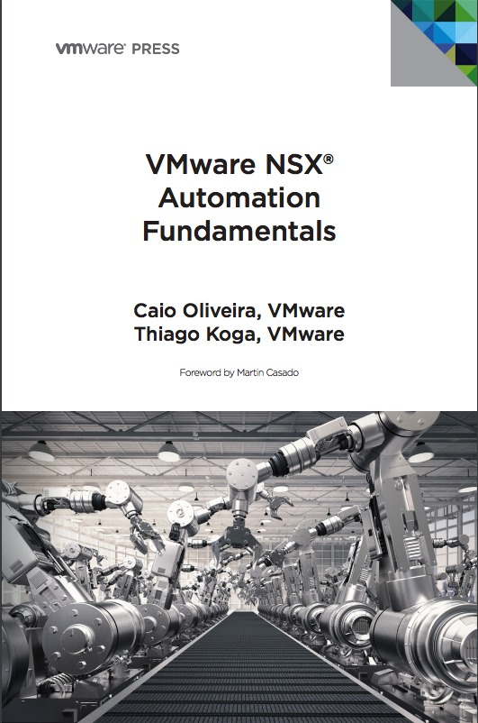
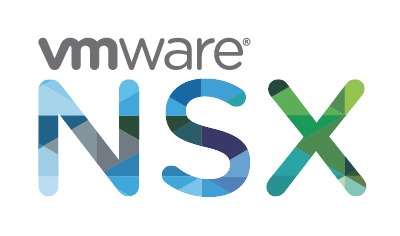

Livro - VMware NSX Automation Fundamentals Guide - Grátis para download
#vCommunity Blog Review VMworld 2018Compartilhe esse post nas redes sociais...
Olá Homelabers,
Esse post é para falar do lançamento do livro VMware NSX Automation Fundamentals Guide escrito pelos meus amigos Caio Oliveira (@oliveirac_caio) e Thiago Koga (@thikoga)

Esse livro é um livro de alta qualidade, profundamente técnico e estou bem impressionado que a VMware disponibilize esse material totalmente de graça para download.
O livro tem prefácio de Martin Casado (@martin_casado), simplesmente o PAI do NSX - ele foi o fundador da Nicira, a empresa que criou o NSX e que depois foi vendida para a VMware em 2012.
Eu conheço o Caio e o Koga há muitos anos, e posso dizer que eles são excelentes profissionais e referencias mundiais em VMware NSX. O Koga foi o primeiro cara que eu vi falando sobre NSX no Brasil, lá no vFórum Brasil de 2013 ou 2014. Eu nem tinha o Homelaber ainda =) Me lembro que fiquei maluco com as possibilidades do NSX. Já o Caio, foi líder do VMUG SP junto comigo e é outro cara que manja MUITO de redes e NSX.

Ainda não li o livro, mas sei que o conteúdo é muito bom e se você trabalha ou tem curiosidade de saber mais sobre o VMware NSX, é um livro obrigatório. O livro foi escrito para quem já tem um pouco de conhecimento do produto, mas não é obrigatório, uma vez que o livro** irá abordar alguns conceitos básicos do produto**.
E eu já falei que o livro é grátis para download? Está esperando o que? O link para download é esse. O livro tem 166 páginas e 9Mb e está em Inglês. Se você quiser comprar o livro físico, ele estará disponível em https://nsxstore.com/
E para finalizar, tenho mais duas novidades legais para contar:
O Caio e o Thiago estarão na VMworld apresentando uma sessão sobre “Automação com NSX” e também autografando o livro. Então, se você for a VMworld US, terá a chance de ouvir esses dois feras e ainda ganhar o livro autografado.
Eles estarão também, em** primeira mão**, no vBrownBagBrasil, episódio 27 - Especial Pré-VMworld, no dia **20/08**, falando sobre o livro e **quem sabe**, teremos **sorteio de alguns livros**. Então já faça o seu registro no vBrownBag Brasil.
E se você estiver na VMworld US em Vegas, não deixe de assistir a sessão (faça a reserva no Schedule Builder) Learn from the Authors: VMware NSX Automation Fundamentals [VMTN5509U] que acontecerá na segunda-feira, dia 27/08 às 3:30pm (horário de Las Vegas) e ao vivo via streaming no site do vBrownBag às 19:30 (horário de Brasília).
Já a sessão de autógrafos, será no dia** 28/08 das 11:30am - 12:00pm** no **estande** da **VMware** na VMworld.
É isso pessoal, deixem seus comentários no post, o que acharam do livro e também sua experiência com o VMware NSX.
Ah, não deixem de seguir o Caio (@oliveirac_caio) e o Koga (@thikoga) no Twitter.
Caio e Koga, parabéns meninos pelo livro! Sucesso para vocês!
Até a próxima!
Compartilhe esse post nas redes sociais...Valdecir Carvalho
Nerd e pai orgulhoso da Mariana e João. Profissional Sênior de TI com foco em arquitetura de infraestrutura e cloud computing. Blogueiro, podcaster, palestrante, amante de comunidades técnicas, fotógrafo aposentado e adora jogos antigos.
#vExpert · #VMUGLeader · #VUGBrasil · #vBronwBagBrasil · #VeeamVanguard